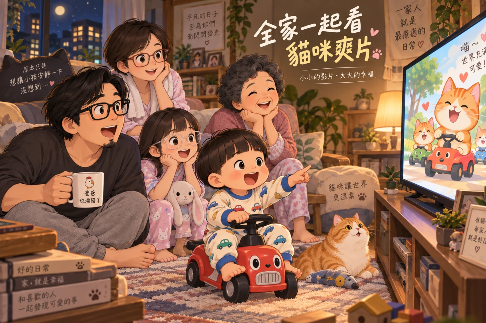
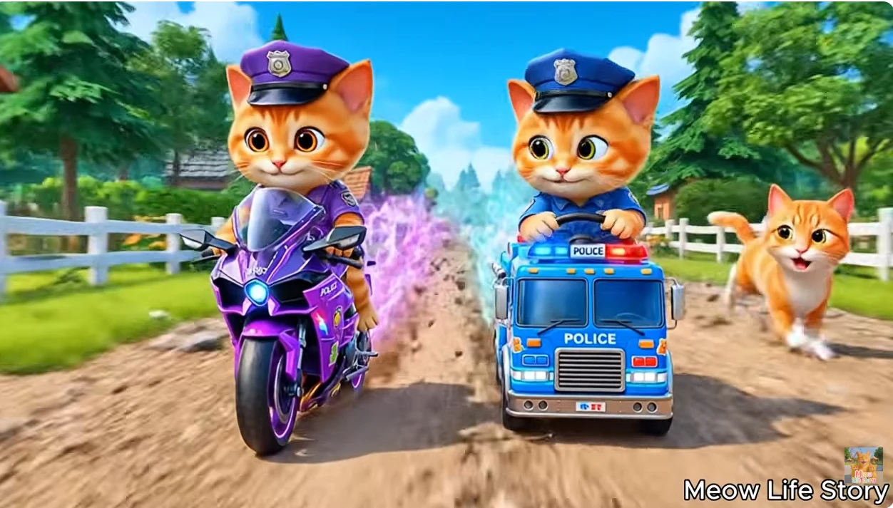

—除了貓咪努力去追夢，還是一個「努力就會有結果」的世界

每天晚上鼠媽媽去洗澡，大概就是龍弟弟一天當中最焦躁的時刻，因為平常最常黏著的鼠媽媽突然消失了，龍弟弟立刻啟動他的第二順位、第三順位支援系統：兔阿嬤、雞爸爸。
昨天晚上也是，鼠媽媽才剛進浴室沒多久，龍弟弟已經騎著他的車車，在家裡一路呼天喊地，一下阿嬤、阿嬤，一下爸爸、爸爸。
最後硬是騎著車車，把原本在休息的兔阿嬤從房間裡拖了出來。雞爸爸想說，好吧，不然開個龍弟弟最近很喜歡的「咕咕雞」給他看一下，撐到鼠媽媽洗完澡，大家今晚應該就可以平安下莊。結果電視才剛打開沒多久，龍弟弟突然看到畫面裡出現了—貓咪騎車車。
這對龍弟弟來說，基本上是一個沒有抵抗力的組合，可愛的貓咪加上「車車」，直接進入指定播放區。「這個！」於是咕咕雞還沒正式上班，就先被貓咪取代了。
雞爸爸原本想說陪著龍弟弟看一下，兔阿嬤才不會被纏住。沒想到看了一陣子之後，自己也開始覺得：欸？這個好像滿好看的。
原本只是貓咪騎車，後來雞爸爸開始認真追劇
這個頻道叫做 Meow Life Story，故事大多圍繞著一隻貓媽媽和兩隻貓咪寶貝。
每一集都不長，像是一個個很簡單的小短篇，有時候是家裡有人跌倒或生病、有時候是孩子看到喜歡的東西、有時候一家人遇到某個困難。
故事本身其實沒有什麼燒腦的設定，也沒有什麼灑狗血、穿越、失憶、習得絕世武功...。這群貓的世界相對單純很多，看到想要的東西，沒辦法直接買？那就去想辦法。
有時候去比賽、有時候去打工、有時候賣東西。自己努力賺錢，再把想要的東西買回來。雞爸爸看了幾集以後突然發現，這個節奏怎麼莫名熟悉。這不就是爽片嗎？
只是一般爽片可能是：被瞧不起、被欺負，主角突然開外掛，接著一路打臉。最後掏出黑卡：「其實我就是OOO。」旁邊的人全部露出不敢置信的表情，觀眾獲得滿滿情緒價值。
但 Meow Life Story 不是這一套。小貓喵喵叫：我想要這個，媽咪看錢包裡面沒有錢...那我們去努力一下，摘花做香水、做手工飾品、賣飲料、去比賽。然後—真的得到了。
沒有人被羞辱，沒有人需要跪下，沒有反派，甚至連壞人都不太需要出場，但是不知道為什麼…有種莫名紓壓的爽感。
龍弟弟被貓咪黏住，鼠姊姊出來後也走不開了
鼠姊姊原本還在房間裡玩自己的玩具，雞爸爸看著看著，突然覺得鼠姊姊應該也會有興趣。畢竟跟龍弟弟相比，鼠姊姊也到了可以理解「角色遇到事情、想辦法解決」的年紀。
果然，鼠姊姊出來之後看了一下，然後…也黏住了。
本來只有雞爸爸跟龍弟弟，後來多一個鼠姊姊，兔阿嬤都從房間裡被拖出來了，也一起看。等到鼠媽媽洗完澡走出來，看到客廳裡一群人莫名其妙全部盯著螢幕，也被叫過來...
她大概本來只是想知道：「你們到底在看什麼？」結果看著看著…也坐下來了...
感覺事情到這裡其實已經有點失控...
原本只是雞爸爸想隨便開個影片，讓龍弟弟撐到媽媽洗完澡。最後變成：龍弟弟在看、鼠姊姊在看、雞爸爸在看、鼠媽媽也在看，兔阿嬤也在旁邊一起討論劇情...
然後隨著影片裡三隻橘貓一直「喵、喵、喵」，右右也忍不跑過來湊熱鬧。雞爸爸看了一圈客廳，發現一件很荒謬的事情：我們全家現在到底為什麼都在看 AI 貓咪賺錢？
而且...還看得很認真...

Meow Life Story
🎬 Welcome to Meow Life Story! 🐾 Step into a cozy world where fluffy paws, tiny whiskers, and big dreams come to life! 😺 Here, you'll meet the most adorable cat family - Mama Meow and their mischievous kittens who turn every day into a new adventure.
讓人上癮的不是貓咪而是「努力很快就有回音」
雞爸爸後來想想，這些短篇故事真正療癒的地方，可能不只是貓咪的表情有多可愛，而是它把現實生活裡很漫長的「等待」，全部縮短了。
想要一個東西，遇到困難，開始想辦法，付出努力，然後很快地，結果就出現了。整件事情可能只需要短短幾分鐘，對孩子來說，很容易理解。
對大人來說，反而有一種莫名的舒暢，因為現實生活幾乎完全不是這樣。工作做得很認真，完成一件事情之後，通常跳出來的不是「任務完成」，而是—下一件事情。
育兒更是如此，就像跟龍弟弟說了幾百次：「玩具玩完要收回去。」終於有一天，看見他自己把車車放回箱子裡，雞爸爸內心才剛開始播放感動配樂…下一秒，龍弟弟直接把旁邊另外一箱全部倒出來。
陪他說話、陪他吃飯、陪他刷牙...；教他等待、教他分享、教他不是所有想要的東西都能立刻拿到...這些事情，我們每天都在做，只是沒有人告訴我們，哪一件明天會看到成果...哪一件要半年、哪一件可能十幾年以後，才會突然從孩子身上冒出來。
所以成年人的累，有時候不只是事情很多。而是：已經投入了很多，卻不知道自己的努力，什麼時候才會收到回音。
也難怪看著這群貓咪「想要、努力、得到」，會覺得特別舒服，至少在那幾分鐘裡，世界是有回覆的。
但印象最深刻的是 是貓咪也有失敗的時候...
但讓雞爸爸留下印象的是，雖然大部分 Meow Life Story 傳達：只要努力，就會成功。但偶爾也有出現意外。
就像現實世界哩，孩子努力過，不代表每一次都能得到想要的東西。大人認真工作，也不代表所有付出都會得到等比例的回報。有些事情，甚至努力了很久，最後還是會失敗。
就像昨天雞爸爸看到其中一集，反而讓我印象更深刻。那一集裡，小貓很想要一台消防車，貓媽媽跟她約定：考試拿到 A，就買給你。
結果小貓雖然很努力念書，但最後卻只拿到 B。沒拿到 A，當然也拿到消防車。
小貓很傷心，如果照前面「努力就有結果」的爽片公式，這裡其實應該算是任務失敗了。但就在回家的路上，小貓看到附近熊貓家失火。她奮不顧身的去幫忙滅火，沒有因為今天考試失敗，就什麼都不管。
最後，消防隊的大象叔叔因為看見牠做的事情，送給牠一台消防車。雞爸爸看到這裡突然覺得—也許真正讓人覺得療癒的，並不是努力一定會照原本期待的方式成功。而是當一件事情沒有如願，我們還是願意往前走，還是願意做眼前可以做的事，然後有些好的事情，可能會從原本完全沒想到的地方出現。
當然，現實生活也不會每一次都這麼剛好，不是每一場失敗後面，都會站著一隻準備送禮物的大象叔叔。但雞爸爸想，也許我們偶爾還是需要這樣的故事。提醒自己：努力，雖然不一定保證得到原本想要的答案，但更努力、認真地生活，也許會走到意料之外的地方。
就像昨天晚上，原本只是鼠媽媽去洗個澡，龍弟弟卻因為騎車車的貓咪召集了全家，莫名其妙一起看了一場 AI 貓咪爽片，也因此我們全家人難得一起坐客廳一起看影片...
看著一個很簡單的世界告訴我們：幸福不一定從我們原本期待的那個方向過來，有時候，它真的會繞一點路，然後在某個完全沒想到的轉角，突然出現。
至於龍弟弟有沒有想到這麼多？應該沒有。或許龍弟弟真正關心的大概只有一件事—那隻貓咪，什麼時候還要再騎車車？
你們家的孩子，在主要照顧者突然不見時，也有固定的第二順位嗎？